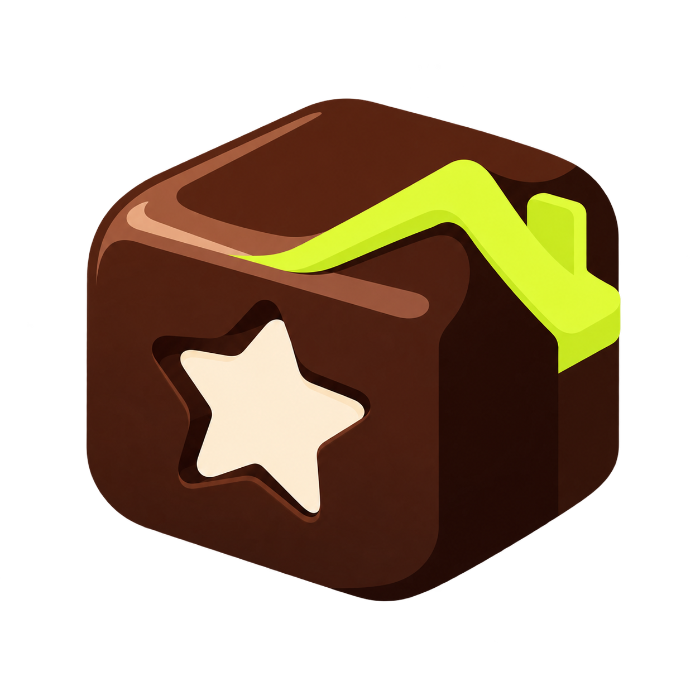

FudgeSupabase data. Real Drive links.
Fudge stores records in Supabase and uses this small Google connector only for review pictures. Every saved image gets a genuine drive.google.com/file/d/…/view?usp=drive_link URL.
Paste the Drive connector
Create a standalone Apps Script project, delete the starter code, and paste this protected connector. No spreadsheet is created or used as Fudge’s database.
Preparing your protected connector…
Paste the web-app URL
- Save the script and select fudgeDriveStatus beside Run.
- Click Run, then review and allow Google Drive permission once.
- Click Deploy → New deployment → Web app.
- Choose Execute as: Me, access Anyone, then deploy.
Already connected? Replace all the old code with the copy above, then run fudgeDriveStatus once and approve access. Then choose Deploy → Manage deployments → ✏️ → Version: New version → Deploy. The /exec URL stays the same, so you will not need to paste it again.
Use the deployed URL ending in /exec. To share the same Drive folder with another Fudge installation, copy the FUDGE1| connection code from this page. The deployment must use Who has access: Anyone.
Not connected
The connector creates a Fudge Reviews folder and returns real Drive links.